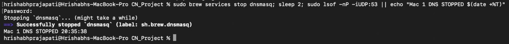
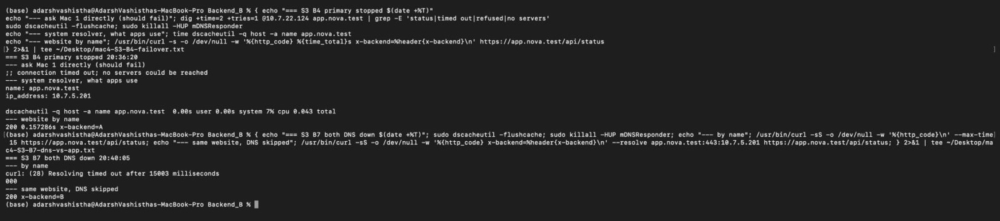
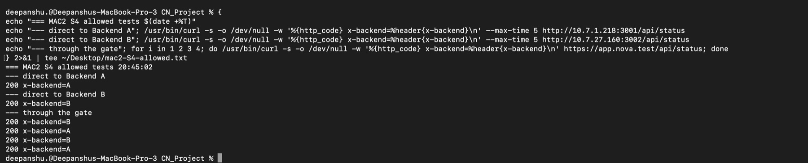
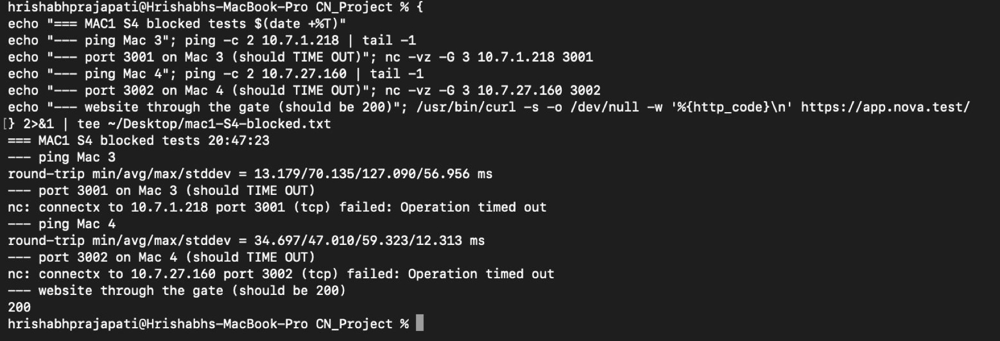
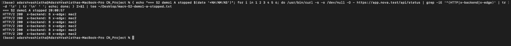
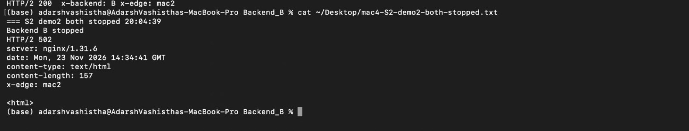
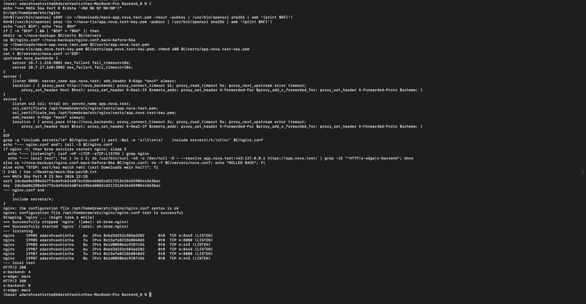
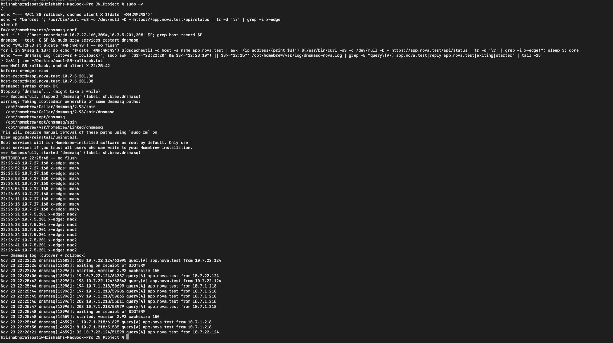
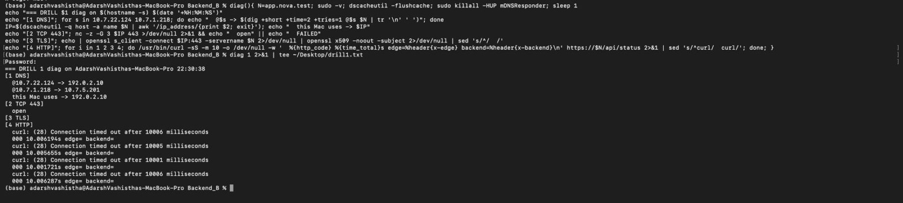
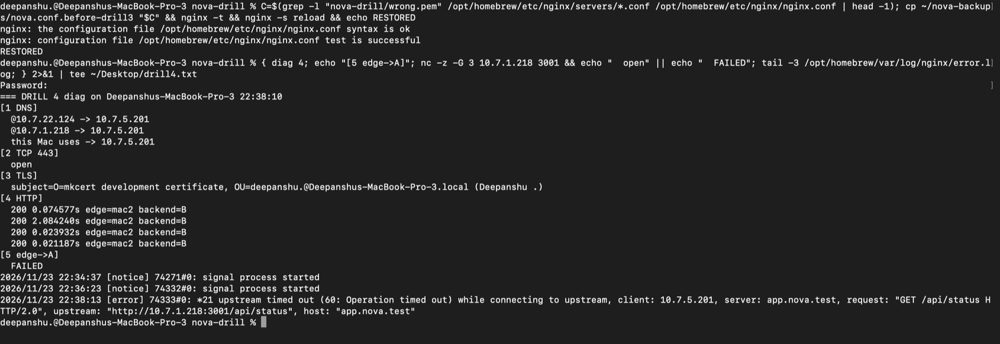

Computer Networks · Course Project
Phase 2 Report: Harden, Recover and Troubleshoot
Team members
| Name | Enrollment No. | Machine | Role in Phase 2 |
|---|---|---|---|
| Hrishabh Prajapati | 2401020027 | Mac 1 | Primary DNS server, test client |
| Deepanshu | 2401010144 | Mac 2 | Active edge (nginx, TLS, load balancer), team CA |
| Kanishk Sharma | 2401010207 | Mac 3 | Backend A, backup DNS server, coordination |
| Adarsh Vashistha | 2401010026 | Mac 4 | Backend B, standby edge, test client |
Section 1
Phase 2 keeps the Phase 1 network (private DNS, one nginx edge, two backends) and makes it harder to break. We added a second DNS server, a visible 30-second TTL, firewall rules around the backends, faster nginx failover, a standby edge on another Mac and a step-by-step way to find faults. All work was done and recorded on 23 November 2026 on the same Wi-Fi network.
| Ext. | What the brief asks | What we showed | Status |
|---|---|---|---|
| A | Backup DNS resolver | Mac 3 answers the same records. With Mac 1's DNS stopped, Mac 4 still resolved the name and opened the site (200). | Done |
| B | TTL and record change | TTL 30 s on both servers. A cached client kept the old answer for about 40 s; a flushed client switched at once. | Done |
| C | Backend isolation | pf rules: the edge reaches ports 3001/3002, other Macs time out. Rollback tested. | Done |
| D | HA failover | Backend A stopped: every request served by B. Wait on a broken backend cut from 60 s to 5 s (frozen) and 2 s (silent drop). | Done |
| E | Edge migration by DNS | Standby nginx on Mac 4 with its own key. DNS moved to Mac 4 and back with no failed request. | Done |
| F | Troubleshooting challenge | Fixed diagnosis order and a diag script. Four practice faults, each found at the right layer. | Ready for the faculty fault |
Section 2
| Machine | IP (23 Nov) | Services | Ports | Cloud equivalent |
|---|---|---|---|---|
| Mac 1 | 10.7.22.124 | Primary DNS (dnsmasq 2.93) | UDP 53 | Managed DNS (Route 53) |
| Mac 2 | 10.7.5.201 | Active edge: nginx 1.31.6, TLS, load balancer | TCP 443, 8080 | Cloud load balancer (ALB) |
| Mac 3 | 10.7.1.218 | Backend A (Node.js); backup DNS (dnsmasq) | TCP 3001; UDP 53 | App instance A; second DNS resolver |
| Mac 4 | 10.7.27.160 | Backend B (Node.js); standby edge (nginx) | TCP 3002; TCP 443 | App instance B; standby load balancer |
The Wi-Fi gave every Mac a new address since Phase 1 (for example Mac 2 was 10.7.7.58). We re-checked IPs, gateway and ping between all four Macs before changing anything, and updated every config. Evidence: project-management/IP_INVENTORY.md.
A request still travels the same way as in Phase 1: DNS lookup (UDP 53), TCP handshake to the edge (443), TLS handshake, then HTTP/2 inside TLS; nginx forwards plain HTTP to a backend. Phase 2 adds a second place to ask in step 1 and a second edge for step 2, and it lets only the edges open connections to the backends.
Section 3
| Part | Phase 1 | Phase 2 | Why |
|---|---|---|---|
| DNS servers | Mac 1 only | Mac 1 primary, Mac 3 backup, same records. Every client lists both. | Ext. A |
| DNS records | address=, TTL 0 | host-record=app.nova.test,10.7.5.201,30 (and api), local-ttl=30, local=/nova.test/, no-resolv, server=8.8.8.8, query log | Ext. B; no leaks of .test to the internet |
| nginx timeouts | defaults (60 s) | proxy_connect_timeout 2s, proxy_read_timeout 5s, proxy_next_upstream error timeout, max_fails=1 fail_timeout=10s | Ext. D |
| Edge header | none | X-Edge: mac2 / mac4 on every reply | see which edge answered |
| Edges | Mac 2 only | Standby nginx on Mac 4, own private key, certificate signed by the team CA | Ext. E |
| Backend ports | open to the whole LAN | pf rules in our own anchor com.apple/nova: only the edges | Ext. C |
| TLS trust | Mac 4 used a CA file in curl | Team CA trusted in the System keychain on all four Macs; no -k | Phase 1 gap closed |
Before Phase 2 we also closed the Phase 1 items that had no evidence: CA trust on every Mac, HTTP/2 (ALPN: server accepted h2), wrong destination port (connection refused), one backend stopped and both backends stopped (502). Evidence: MAC_*/evidence/phase1-completion/ and MAC_4/evidence/phase2/S2-*.
Section 4 · Extension A
Mac 3 runs a second dnsmasq with the same records. All four Macs list Mac 1 first and Mac 3 second. Then Hrishabh stopped dnsmasq on Mac 1 at 20:35:38.


--resolve.
MAC_1/evidence/phase2/S3-04-primary-dns-stopped.png · MAC_4/evidence/phase2/S3-07-dns-failure-vs-app-failure.pngThe backup's own log proves it did the work: Mac 4 sent it 1 query at 20:31 and 13–14 per minute from 20:35, including query[A] app.nova.test from 10.7.27.160 → 10.7.5.201 at 20:36:22 (MAC_3/evidence/phase2/S3-07-backup-dns-query-log.txt).
| DNS failure (both DNS down) | Application failure (both backends down) | |
|---|---|---|
| Name lookup | fails (Resolving timed out) | works |
| TCP + TLS to the edge | never tried, no address | work |
| Result | curl code 000; with the IP given, 200 | HTTP/2 502 from nginx, x-edge: mac2 |
Section 5 · Extension B
Both servers now give the records a 30-second TTL. We used host-record instead of address= because with address= an IPv6 (AAAA) question got NXDOMAIN, which says the name does not exist at all; host-record answers NOERROR with no IPv6 address.
=== S7 check from Mac 3 23 Nov 2026 22:21:20 10.7.22.124 app.nova.test. 30 IN A 10.7.5.201 AAAA: NOERROR 10.7.1.218 app.nova.test. 30 IN A 10.7.5.201 AAAA: NOERROR client after flush: ip_address 10.7.5.201 → HTTP/2 200, x-edge: mac2
Shortened from MAC_3/evidence/phase2/S7-03-ttl30-verified-both-servers.txt; Mac 1 output in MAC_1/evidence/phase2/S7-02-ttl30-mac1.png.
The record change itself is the edge migration in Section 8: the record was moved from Mac 2 to Mac 4 and back. A client that did not flush kept the old answer; a client that flushed switched at once.
| Change | Server switched | Flushed client (Mac 3) | Cached client (Mac 1) |
|---|---|---|---|
| Mac 2 → Mac 4 | 22:22:26 | run invalid (see Section 10) | old edge until 22:23:02, new from 22:23:06 |
| Mac 4 → Mac 2 | 22:25:48 | new edge at 22:25:50 | old edge until 22:26:18, new from 22:26:21 |
Mac 1's DNS log shows why: its cache asked again only 41 s and 39 s after the previous lookup. So with TTL 30 the worst case on macOS was about TTL + 10 s, not exactly 30 s. In production this is why teams lower the TTL a day before a migration, then move the record, and keep the old server running until the longest TTL has passed.
Section 6 · Extension C
Each backend Mac loads rules into its own pf anchor com.apple/nova, so macOS's own rules are never touched. Rules are read top to bottom; the first match wins:
pass in quick on lo0 all # the Mac itself
pass in quick proto tcp from 10.7.1.218 to any port 3001 # Mac 3's own IP
pass in quick proto tcp from { 10.7.5.201, 10.7.27.160 } to any port 3001 # the two edges
block drop in quick proto tcp from any to any port 3001 # everyone else: silent drop
MAC_3/firewall/mac3-backend-a.edgetier.pf. Mac 4 has the same rules for port 3002 (MAC_4/firewall/mac4-backend-b.pf). The first test used strict rules that allowed only Mac 2; the standby edge (Mac 4) was added for Extension E.


The pf counters confirm it: the edge's pass rule counted 38 packets and the block rule 6 packets, the dropped connection attempts (MAC_3/evidence/phase2/mac3-S4-counters-after-block.txt). Rollback was tested: we flushed only our anchor and released our own enable token, and pf went back to its starting state, Disabled (mac3-S4-rollback.txt). On Mac 4, pf was already enabled by another program, so there we only add or flush our anchor and never turn pf on or off.
Ping still works while the port is blocked. This shows the rule acts at the transport layer (one TCP port), not on the whole host.
Section 7 · Extension D
nginx marks a backend as failed after one error (max_fails=1), skips it for 10 s, and retries the same request on the other backend (proxy_next_upstream error timeout).


502 (with x-edge: mac2): DNS, TCP and TLS still work, the failure is behind the edge. After Backend A was restarted, replies alternated A/B again (MAC_4/evidence/phase2/S2-06-demo1-a-returns.png).
MAC_4/evidence/phase2/S2-03-demo1-a-stopped-all-b.png · S2-08-demo2-both-stopped-502.pngA stopped backend refuses at once, so failover is instant. The two harder cases are a backend that accepts but never answers (we froze it with kill -STOP) and a backend whose packets are dropped (pf). We timed the request that hit the broken backend with the Phase 1 and Phase 2 configs.
| Fault | nginx setting | Phase 1 | Phase 2 | Status |
|---|---|---|---|---|
| Backend frozen | proxy_read_timeout | 60.13 s | 5.25 s, 5.56 s | 200, served by B |
| Packets silently dropped | proxy_connect_timeout | 60.14 s | 2.07 s | 200, served by B |
Details, discarded runs and evidence: project-management/results/T2-frozen-backend-timing.md, T3-silent-drop-timing.md. In both cases nginx's error log names the cause: upstream timed out … while reading / while connecting to upstream.
With two backends, the remaining single point of failure is the edge: if nginx on Mac 2 stops, every client fails (Drill 2 in Section 9). The DNS servers are no longer one, thanks to Extension A. Our step towards removing it is the standby edge in Extension E. It is still a manual switch and clients wait up to one TTL. Removing the single point fully needs two edges sharing one IP address that moves automatically (for example VRRP with keepalived), or a managed load balancer with health-checked DNS.
Section 8 · Extension E
Mac 4 got a second nginx with the same Phase 2 config, only X-Edge: mac4 differs (nginx/nova.standby-mac4.conf). For TLS, Mac 4 created its own private key and sent only a certificate request (CSR) to Mac 2, which signed it with the team CA. The private key never needs to leave Mac 4.

2dcda60a…), config test passes, nginx listens on 443 and 8080, and local requests return HTTP/2 200, x-edge: mac4, backends A and B.
MAC_4/evidence/phase2/S6a-07-standby-edge-started.pngBefore moving any traffic we ran 11 checks against Mac 4 from Mac 3 (MAC_3/evidence/phase2/S6a-08b-preflight-rerun.txt): 200 with certificate verified by the keychain, X-Edge: mac4, backends B A B A B A, ETag gives 304, HTTP/2, same CA but a different certificate from Mac 2, and Mac 2 still unchanged.

mac4 until 22:26:18, then mac2 from 22:26:21. The log underneath shows the client's DNS questions at 22:25:42 and 22:26:21. The same run on Mac 3 with a flush showed mac2 at 22:25:50, two seconds after the switch.
MAC_1/evidence/phase2/S8-04-rollback-mac1-cached-client-and-log.png · MAC_3/evidence/phase2/S8-03-rollback-mac3-flushed-client.txtEvery probe in both directions returned 200 from one of the two edges, so no request failed during the cutover. This works because the old edge keeps running until the cached answers expire. Full timeline: project-management/results/S8-dns-cutover.md.
Section 9 · Extension F
The faculty fault is given at the evaluation. To prepare, we fixed one diagnosis order and wrote one diag function that every Mac runs: (1) DNS: ask both servers and the system resolver; (2) TCP: can we open port 443 on that address; (3) TLS: which certificate comes back; (4) HTTP: status, time, X-Edge, X-Backend. The first layer that fails is the one to fix. Then each member broke something and another member found it.
| # | Fault (who injected) | Found by | What diag showed | Layer |
|---|---|---|---|---|
| 1 | Primary DNS record points to 192.0.2.10 (Hrishabh) | Adarsh | Mac 1 answers 192.0.2.10, Mac 3 answers 10.7.5.201; client uses the wrong one; curl times out after 10 s | DNS |
| 2 | nginx stopped on Mac 2 (Deepanshu) | Hrishabh | DNS correct; TCP 443 fails; curl Couldn't connect in about 1 s | TCP / edge |
| 3 | Certificate for wrong.nova.test (Deepanshu) | Kanishk | DNS and TCP fine; curl (60) no alternative certificate subject name matches | TLS |
| 4 | pf blocks the edge from Backend A (Kanishk) | Deepanshu | All 200, but only backend B and one 2.08 s request; edge → A:3001 fails; nginx log: upstream timed out … connecting to upstream | Network, edge → backend |


Drill 1 also shows a limit of Extension A: the backup DNS helps only when the primary is silent. A primary that answers with a wrong address is believed, and the backup is never asked. Every fault was rolled back, and a final check at 22:38 found both edges returning 200 from A and B.
Section 10
| Problem | Cause | Fix / lesson |
|---|---|---|
| dnsmasq on Mac 1 would not start | New DHCP address; listen-address still had the old IP | Updated the IP. A service bound to one IP breaks when DHCP changes it. |
| Backend B could not use port 3002 | A Docker (Colima) container on Mac 4 held the port | Stopped the container. Check lsof before starting a service. |
Mac 3 could not resolve app.nova.test | Public DNS servers in its list had answered "no such name" and the answer was cached | Removed public servers, flushed the cache. |
| First firewall timing test did not fail | nginx reused an idle keep-alive connection; pf is stateful and lets existing connections through | Waited 10 s for the connection to close before measuring. |
| IPv6 question got "no such name" | address= together with local=/nova.test/ | Switched to host-record: now NOERROR. |
| Mac 4's private key was sent along with its CSR | The whole file selection was shared over AirDrop | Key discarded, new key pair made, CSR checked by its hash before signing. Never used for a certificate. |
| First cutover run on Mac 3 invalid | The flushed client ran before the primary DNS had switched | Repeated with a script that waits until the server answers the new IP. |
| Cached client took ~40 s, not 30 s | macOS resolver cache behaviour | Plan migrations for TTL + margin. |
nc said "open" for an unreachable IP | Campus Wi-Fi behaviour | Trust the end-to-end curl result. |
Section 11
A · Backup DNS. A client tries its DNS servers in order and moves to the next one only when a server does not answer. So a second resolver keeps names working when the first is down, but not when it gives a wrong answer. We also saw that DNS and the application fail differently: with DNS down the site still works by IP; with backends down DNS works but nginx returns 502.
B · TTL. The TTL tells every cache how long it may reuse an answer. A short TTL makes changes reach clients quickly but means more DNS queries. Changes are not instant: clients that cached the old answer keep using it until it expires (about 40 s for a 30 s TTL on macOS), and only a manual flush is immediate.
C · Service isolation. Only the edge needs to talk to the backends, so nothing else should be able to. pf rules are checked in order and the first match wins. Dropping packets makes the client wait for a timeout, which is slower to notice than a refusal. pf keeps state for connections it already allowed, so a new rule does not cut connections that are already open.
D · HA failover. nginx can only fail over after it notices a failure, and the timeouts decide how long that takes. A stopped backend is noticed at once; a frozen or unreachable one took 60 s with defaults and 2–5 s with our settings. Two backends remove the backend as a single point of failure, but the edge itself remains one.
E · Edge migration. DNS can move traffic to another server without touching any client, but only as fast as caches expire. The safe order is: build the standby, check it fully, move the record, keep the old edge running until the TTL has passed, and keep a rollback. Each edge has its own private key, signed by the same CA, so clients trust both.
F · Troubleshooting. Checking layers in a fixed order (DNS, TCP, TLS, HTTP, backend) turns a vague "the site is broken" into one specific cause. The error message itself points to the layer: a timeout while resolving, connection refused, a certificate name mismatch, or a 502 from nginx.
Section 12
| Item | Location in the repository |
|---|---|
| nginx, Phase 1 and Phase 2 (Mac 2) | nginx/nova.phase1-baseline.conf, nginx/nova.phase2.conf |
| nginx, standby edge (Mac 4) | nginx/nova.standby-mac4.conf |
| dnsmasq primary / backup | MAC_1/dnsmasq.phase2-additions.conf, MAC_3/backup_dns/dnsmasq-nova-backup.conf |
| Firewall rules and rollback | MAC_3/firewall/, MAC_4/firewall/ (each with ROLLBACK.md) |
| TLS setup for the standby edge | project-management/results/S6a-standby-edge.md |
| Test results | project-management/results/ |
| Drills and runbook | project-management/TROUBLESHOOTING.md |
| Evidence index (every requirement → file) | project-management/EVIDENCE_INDEX.md |